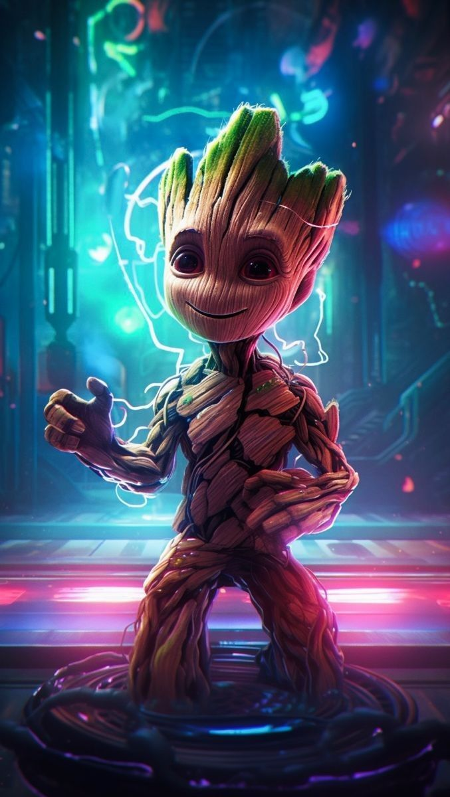
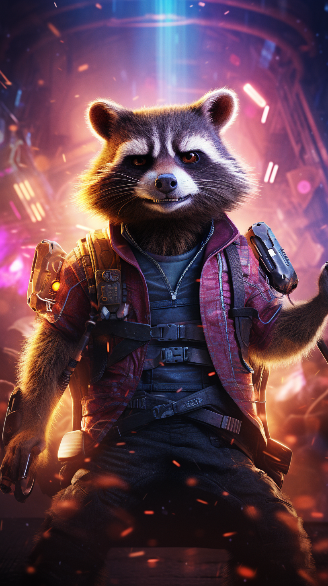
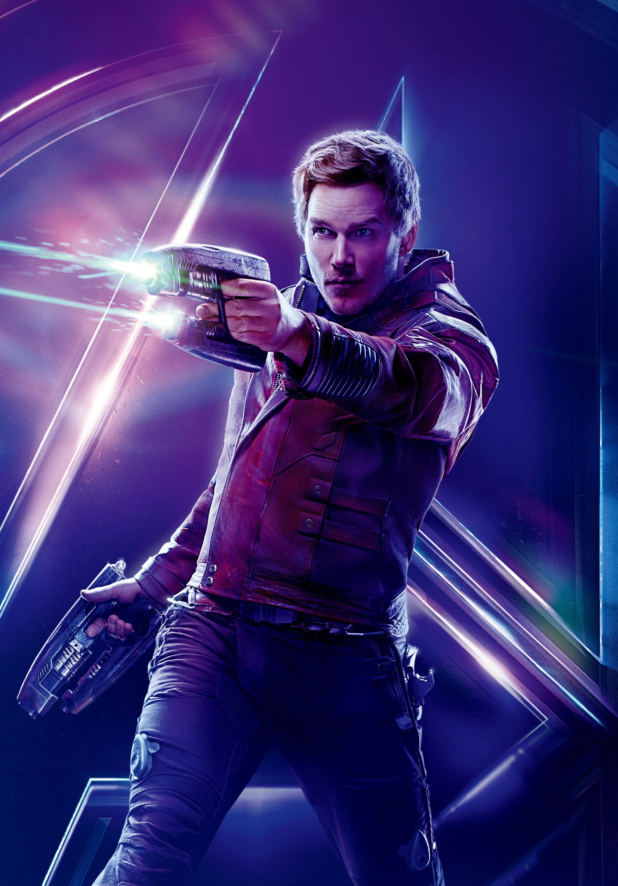
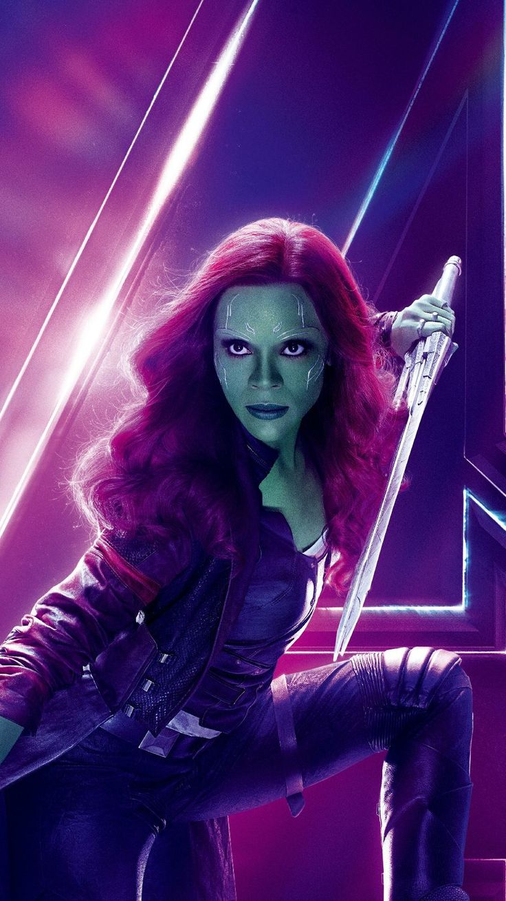
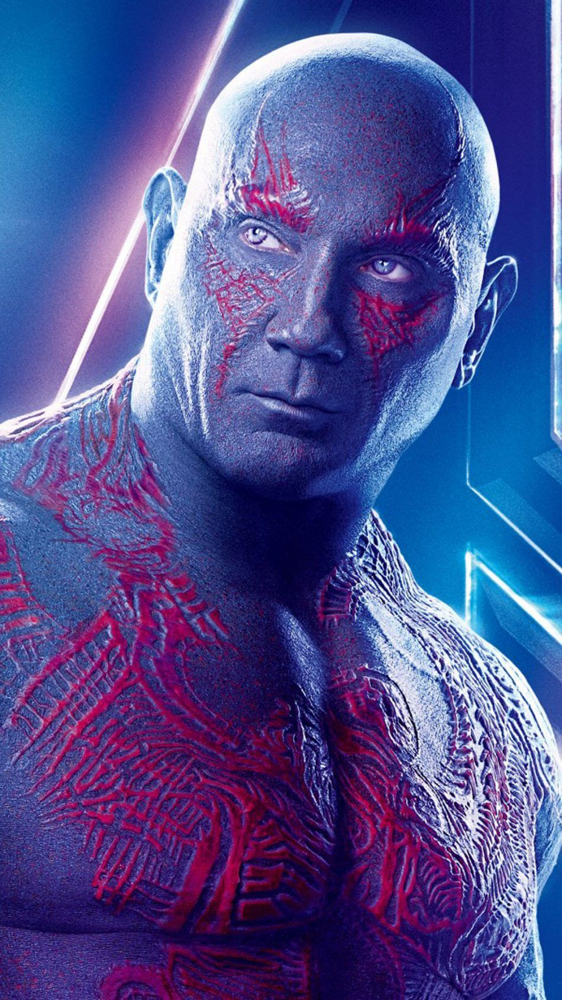
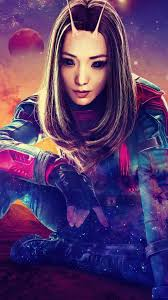

Groot: Um ser vegetal com habilidades regenerativas. Fiel e poderoso, ele é um grande amigo dos Guardiões.

Rocket Raccoon: Um guaxinim geneticamente modificado, mestre em armas e engenhocas, com um passado traumático.

Star-Lord: Peter Quill, líder dos Guardiões. Com um espírito aventureiro e humor irreverente, ele busca seu destino.

Gamora: A última de sua espécie, uma guerreira habilidosa e ex-assassina, buscando redenção por seus crimes passados.

Drax: Vingativo e determinado, Drax busca destruir o responsável pela morte de sua família.

Mantis: Uma empata que pode sentir e manipular as emoções dos outros, ela é uma aliada leal dos Guardiões.